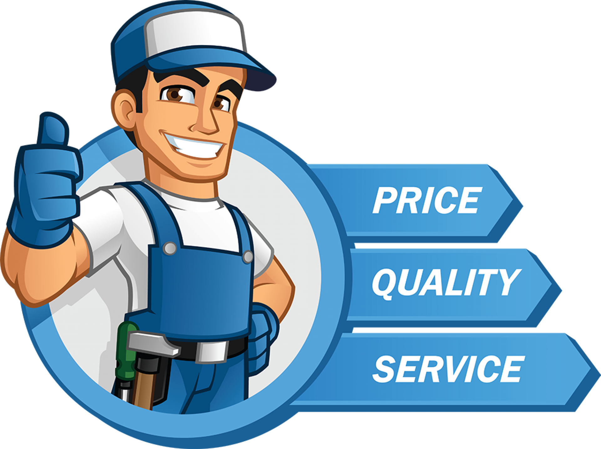

Appliances We Repair
Welcome to E_Repairing!
It’s most trusted appliance service and repair solutions. With verified professionals who come to your doorstep across Egypt,
you can repair your Washing Machine, Fridge, Microwave Oven, Air Conditioner(AC) and more.
Whether it’s a noisy AC, leaking fridge or a dead washing machine of any brand or model, we repair them smartly at your convenience.

Why E_Repairing?
We help you get trusted professionals for all your Home Appliance needs. We connect you to punctual and hardworking experts
who work towards customer satisfaction and meet all your appliance needs.